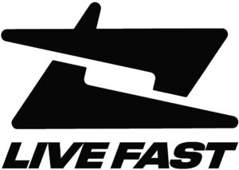

Trade Mark Journal No.2025/028 11 July 2025
WO0000001860788 (14,18,25,35)
Office of origin: European Union Intellectual Property Office (EUIPO)
Date of International Registration:14 November 2024
Date of designation in the UK:
14 November 2024

International priority date claimed: 14 May 2024
(European Union Intellectual Property Office (EUIPO))
(019026742)
- Class 14
- Bracelets [jewellery]; necklaces [jewellery]; earrings (jewellery); bracelet charms; wristwatches; bracelets; decorative pins; body-piercing rings; tie pins; lockets [jewellery], jewellery charms, key rings [split rings with trinket or decorative fob]; shoe jewellery.
- Class 18
- Briefcases; briefbags; sew-on tags of leather for clothing; bumbags; hipsacks; pocket wallets; card cases [notecases]; credit-card holders; handbags; luggage tags; garment bags for travel; suitcases with wheels; toiletry bags; shopping bags of animal skins or moleskin (imitation of leather); travelling bags; rucksacks; fabric tote bags.
- Class 25
- Clothing; footwear; headgear; waist belts; clothing, namely arm warmers; clothing of furs; aprons [clothing]; clothing, namely baby bottoms; scarves (clothing); printed t-shirts; clothing of imitation leather; clothing for car drivers; bridesmaids' wear; christening robes; judo training clothing; infant clothing; clothing for motorcyclists, of leather; clothing; clothing, of leather; paper clothing; clothes for martial arts; clothing for horse-riding, other than riding helmets; sportswear; clothing for fishermen; clothing for young people; clothing, for use in the following fields: wrestling games; maternity wear; wearable clothes and clothing, namely shirts; visors; visors (headgear); boas (necklets); clothing, namely chaps; three piece suits [clothing]; pocket squares; gloves [clothing]; bow ties; money belts [clothing]; knitted clothing; cardigans; golf pants, shirts and skirts; belts [clothing]; dress gloves; handwarmers (clothing); arab scarves with geometric patterns; shirts; shirts for suits; casual shirts; collared shirts; crew neck shirts; buttoned shirts; nighties; trousers; shorts; trousers of leather; trousers for children; trousers for children; sweatpants; ski trousers; snowboard trousers; pantsuits; culotte skirts; braces [suspenders] for clothing; stocking suspenders; garters; suspender belts for men; jackets [clothing]; jackets being sports clothing; fur jackets; fishing vests; sleeved jackets; sleeveless jackets; jackets and socks; snowboarding jackets; men's and women's jackets, coats, trousers, vests; clothing, namely jogging sets; clothing, namely sweat pants; clothing, namely, sets; leather headwear; sports headgear (other than helmets); children's headwear; visor caps; corsets [underclothing]; neckties; yashmaghs; short-sleeved or long-sleeved t-shirts; short trousers; short-sleeve shirts; cowls [clothing]; skull caps; warm-up suits; long jackets; long sleeve pullovers; belts made of leather [clothing]; slacks; leggings [trousers]; light-reflecting jackets; cuffs; caps being headwear; caps being headwear; cap peaks; clothing, namely cap peaks; millinery, namely cap peaks; sun visors [headwear]; nightwear; women's outerclothing; articles of outer clothing; ear muffs [clothing]; overalls; paper hats [clothing]; hats (paper), for use in relation to the following goods: articles of clothing; party hats (clothing); furs [clothing]; fur coats and jackets; polo knit tops; sweaters; clothing, namely, tank tops; clothing, namely turtlenecks; rugby tops; bush jackets; mufflers [clothing]; sun hats; sun visors [headwear]; wimples; headgear (veils); shoulder wraps; sweatbands; clothing, namely sweat pants; aprons (clothing); clothing, namely shorts; playsuits [clothing]; quilted jackets [clothing]; headbands (clothing); tee-shirts; togas; tops [clothing]; headscarves (clothing); outerclothing; bottoms (clothing); warm-up jackets; windproof and waterproof jackets; weatherproof clothing; waterproof outerwear; waterproof pants; waterproof jackets; oilskins [clothing]; chefs' jackets; cagoules; gaiters; clothing, namely babies' pants; wind resistance jackets [clothing]; windcheaters; windbreakers; hosiery; weather resistant outer clothing; thermally insulated clothing; heavy coats; overpants; beach shoes; sports shoes; boots; flip-flops; slippers; rubbers [footwear].
- Class 35
- Retail services in relation to non-alcoholic beverages; retail services in relation to coffee; retail services in relation to iced coffee; retail services in relation to decaffeinated coffee; retail services in relation to coffee in whole-bean form; retail services in relation to coffee extracts; retail services relating to alcoholic beverages; retail services in relation to prepared alcoholic cocktails; retail services in relation to carbonated non-alcoholic drinks; retail services in relation to energy drinks containing caffeine; retail services in relation to the following goods: soft drinks; retail services in relation to beer; retail services in relation to games; retail services in relation to the following goods: toys and toys; retail services in relation to gymnastic and sporting articles; retail services in relation to dart boards; retail services in relation to the following goods: darts accessories; retail services in relation to swimming pool air floats; shop retail services connected with carpets; retail services in relation to towels of textile; retail services in relation to the following goods: adhesive textile labels; retail services in relation to cups; retail services in relation to plates; retail services in relation to the following goods: chopping boards; retail services in relation to mugs; retail services in relation to household containers; retail services in relation to glasses [receptacles]; retail services in relation to the following goods: straws (for drinking); retail services in relation to serving platters; retail services connected with stationery; retail services in relation to tear-off calendars; retail services in relation to albums; retail services in relation to stickers [stationery]; retail services in relation to the following goods: erasers; retail services in relation to printed cards; retail services in relation to printed matter; retail services in relation to flags of paper; retail services in relation to sunglasses; retail services in relation to cell phone covers; retail services for mobile phone accessories; retail services in relation to earbuds; retail services in relation to headphones; retail services in relation to hunting knives; retail services in relation to jack knives; retail services in relation to hammers [hand tools]; retail store services in the field of clothing; retail services in relation to headgear; retail services in relation to footwear; retail services in relation to printed matter; retail services in relation to furnishings; retail services relating to fragrancing preparations; retail services in relation to festive decorations; retail services in relation to hygienic implements for animals, retail services in relation to hygienic implements for humans; retail services in relation to beauty implements for animals, retail services in relation to beauty implements for humans; retail services in relation to tableware; retail services for hand tools; retail services relating to kitchen knives; retail services in relation to works of art; retail services in relation to art materials; retail services in relation to furniture; retail services in relation to sewing articles; retail services in relation to stationery supplies; retail services in relation to umbrellas; retail services in relation to cleaning articles; retail services in relation to jewellery; retail services in relation to sex aids; retail services in relation to sporting articles; retail services in relation to sporting equipment.
LIVE FAST DIE YOUNG Clothing GmbH
Representative: OSBORNE CLARKE (HAMBURG), Reeperbahn 1, 20359 Hamburg, GERMANY